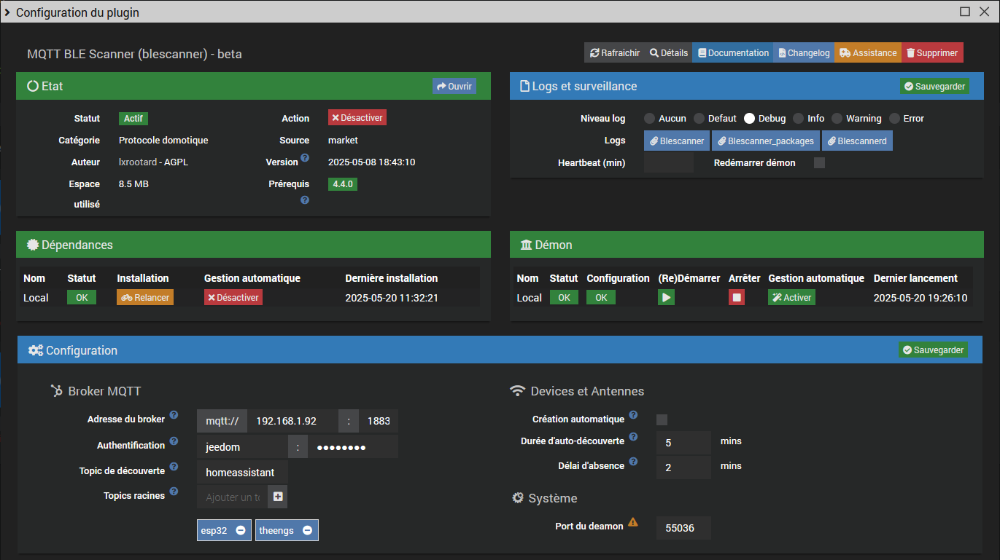
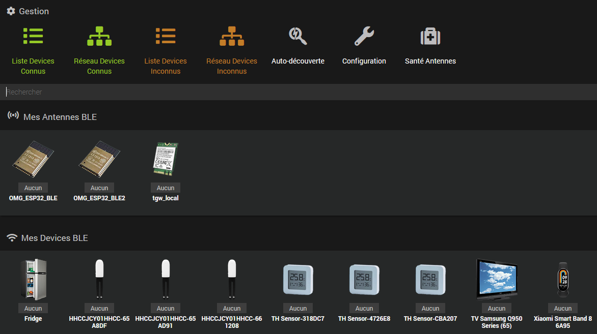
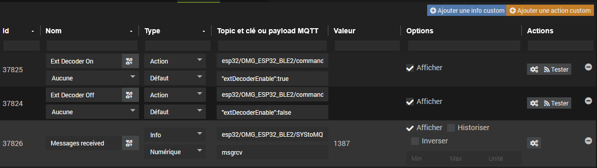

This plugin allows you to discover and manage Bluetooth devices and OMG ESP32 BLE antennas.
It is also compatible with Theengs antennas.
It is compatible with the #plugin-tgw
and can work with or without the #plugin-mqtt2
The plugin does not install antennas. Several options are available:
Simply check the corresponding box, see Configuration below.
To install Theengs antennas manually see here
Antennas must publish their information to one or more root topics, each grouping one or more antennas.
The auto-discovery topic is optional; if not provided, only presence will be available on the equipment.
The structure must follow this schema:
/root_topic1/antenna1
/root_topic1/antenna2
/root_topic2/antenna3
...
/discovery_topic
Example: here a single root topic theengs with 2 antennas tgw_local and tgw_remote.
Warning! LWT and BTtoMQTT must be directly under each antenna, otherwise check the plugin-tgw compatibility box.

By default in this mode, the plugin uses the plugin-mqtt2 configuration (if installed).
The plugin-mqtt2 startup is automatic.

In this mode, the MQTT broker startup is not managed by the plugin.
It is necessary to provide the MQTT connection information.
- Broker address: default mqtt://localhost:1883
- Authentication: username and password

homeassistantroot_topics monitored by the plugin (at least one). Sub-topics are not accepted.plugin-tgw. In this case, the root topic is automatically filled in.55036, do not change unless there is a conflictAuto-discovery is active on startup, and detected antennas are automatically added. You can also stop or restart it using the Auto-discovery button.
If automatic creation has been checked on the configuration page, devices will be automatically added at the end of synchronization.

Displays all unmanaged devices. The Discoverable column indicates whether devices support auto-discovery or not. The display absent devices option allows you to see auto-discovered devices that are not reachable. It is possible to filter table rows by clicking on column headers.
The Add button allows you to add discovered devices one by one. If the device is auto-discoverable, its commands will be automatically created; otherwise, only presence and RSSI will be available.

The contextual display can be shown by attenuation or by distance (if supported by the antenna).
It is activated by selecting a node. The animation can be paused and the graph is zoomable.

Displays already added devices. It is possible to display absent devices and filter table rows by clicking on column headers.

The contextual display can be shown by attenuation or by distance (if supported by the antenna).
It is activated by selecting a node.
The animation can be paused. It is also possible to filter absent devices.

Available commands depend on the type of device or antenna.
A custom image can be added by equipment category.
Theengs antennas have no commands except presence.
ESP32 antennas have several additional commands, see the Bluetooth and System tabs.
The Web Console button provides access to the ESP32 administration interface.
For more information, see the ESP32 Theengs commands documentation.


The Custom tab allows you to add custom commands that may be present in advertising data but not in auto-discovery (depending on the device). For example, here the temperature in Fahrenheit (tempf) for a reprogrammed Xiaomi lywsd03mmc:

Similarly for missing ESP32 commands such as enabling/disabling external decoding or the number of messages received:

For actions, the payload field must be in the format "key1":value1 , "key2":value2...
Advertising data and auto-discovered data are available in the Other Data column of the Unknown Devices List page

BT: Force scan or reboot the ESP32 or Theengs antenna)SYS: Auto discovery parameterBT: Publish Advertisement data parameterBT: Publish HASS presence parameterSee the Jeedom community forum